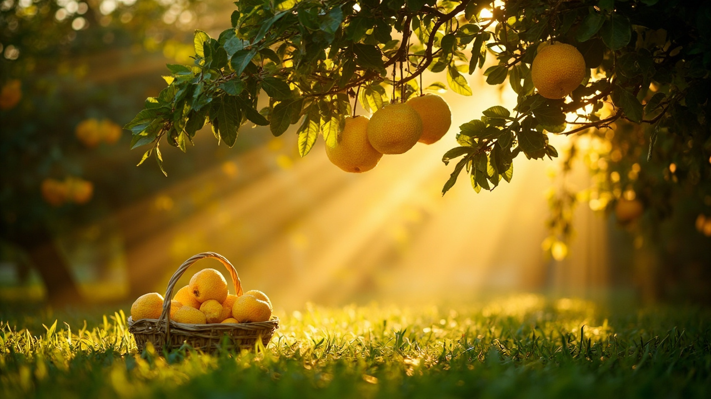
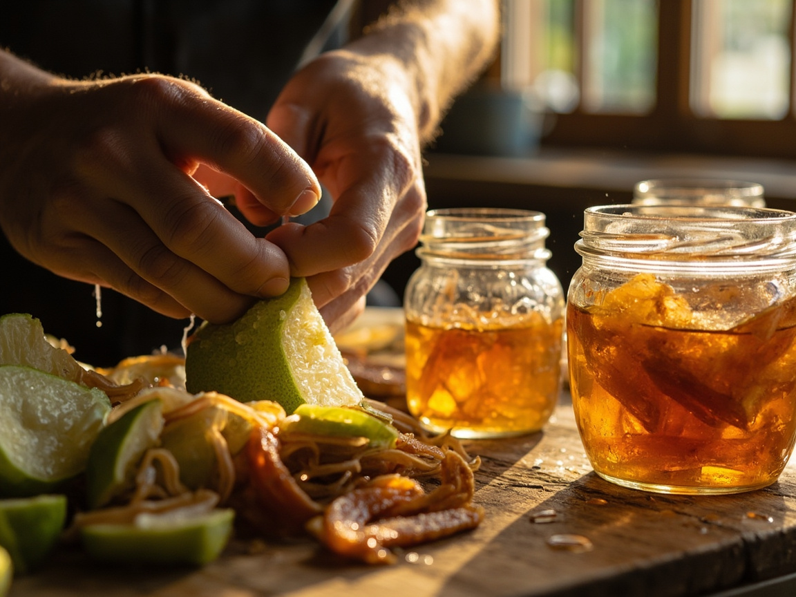
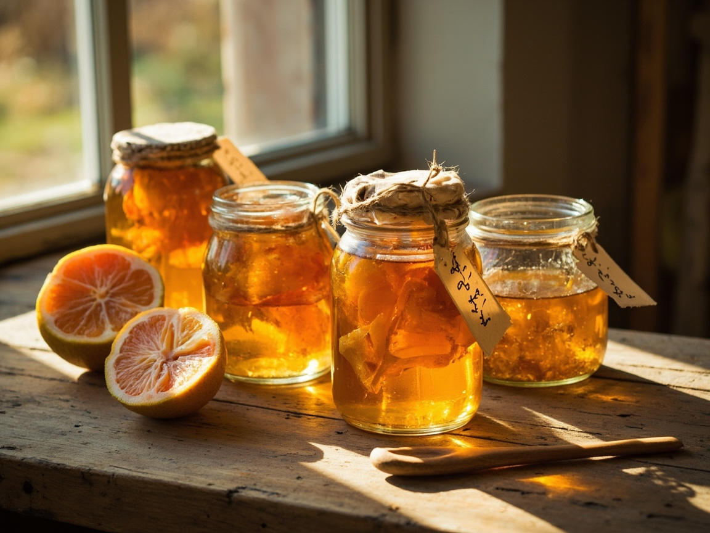

九月・柚子的時節
早上六點，柚子園的空氣，和剛摘下來的第一顆
九月，玻璃小店接到最多的訊息之一：「你們那個梅酒瓶還有嗎？」
不是梅酒的季節喔——是因為客戶買了梅酒瓶回去，其實是裝柚子的。
每年九月到十月，文旦柚進到盛產，大家開始想著：今年要做什麼？要糖漬柚皮？還是柚子茶？或者只是把柚子醬做好，冬天沖熱水喝。我們每年這個時候也跟著忙，因為客戶會來問：「你們有沒有適合的瓶子？」
這個月，為什麼是柚子？
農業部的月曆，九月代表水果就是文旦柚。台南麻豆、花蓮瑞穗，是這個季節最熱鬧的地方。我們整理了一下 LINE 對話的紀錄，九月是客戶詢問「漬物」「發酵」相關瓶款的次高峰——不是第一，但訊號清楚。
九月，對做漬物的人來說，就像春天的梅子一樣，是一年的開始。
採收的早上

今年九月初，我們去了一趟南投。朋友家的柚子園在山坡上，空氣很涼。阿姨六十幾歲，每年這個時候都會把柚子一顆一顆剪下來，戴著袖套，不戴手套——她說手套感覺不到熟度，要用手指輕壓才知道。
摘下來的柚子要先放幾天「消水」，果皮會稍微縮，甜度才會上來。然後才是做糖漬、做茶、做果醬的時間。
下午的廚房

阿姨教的訣竅：柚子皮要切得薄，才不會苦。用刨刀輕輕刨下最外層的黃色皮（不要白色部分，那會苦），切絲，先用鹽抓過，再汆燙兩次去苦澀。
加冰糖小火熬煮，最後加一點點蜂蜜收尾。整個下午都在廚房裡，空氣裡都是柚子的香氣。裝進玻璃瓶之前，要徹底消毒，倒扣放涼——這樣可以放半年。
適合柚子的瓶子
柚子漬物跟梅酒不一樣——它需要寬口瓶，方便挖取。我們挑了 4 款客戶常用的：
給你的三個靈感
🍊 糖漬柚皮
柚皮切絲 → 汆燙兩次去苦 → 加冰糖熬煮 → 入瓶冷藏。可以直接吃、也可以配茶。三個月以上不會壞。
🍊 柚子茶（沖熱水）
柚子果肉 + 柚皮絲 + 蜂蜜 → 小火熬煮 → 入瓶冷藏。冬天挖一匙沖熱水，整個房間都是柚子香。
🍊 柚子抹醬（塗麵包）
柚子果肉 + 糖 + 檸檬汁 → 熬煮到濃稠 → 入瓶倒扣放涼。早餐的好朋友。
如果你剛好買了柚子，或打算做點什麼，
歡迎跟我們聊聊你想做什麼——或者你只是需要瓶子，
都可以。
今年 9 月，一起做點什麼。